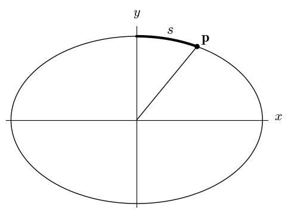

Elliptic and Theta Functions
Table of Contents
1 About this note
This note contains notes for Kotan seminar on elliptic and theta functions.
2 Examples of Elliptic Integrals
Here, we gather some examples varying from pure mathematics to physics.
2.1 Arc Length of Ellipse
Canonical form (標準形):
\begin{equation} \frac{x^{2}}{a^{2}} +\frac{y^{2}}{b^{2}}=1 \quad with \; a \ge b. \end{equation}Parametric form
\begin{equation} \mathbf{p} =\left( \begin{array}{c} x \\ y \end{array} \right) =\left( \begin{array}{c} a \sin{\varphi} \\ b \cos{\varphi} \end{array} \right) \;, where \; 0 \le \varphi < 2 \pi \end{equation}

The length of a curve \(\mathbf{p}(t) = (x(t), y(t))\) is
\begin{eqnarray} s(u) &=& \int_{0}^{u} \left| \frac{d \mathbf{p}}{d t} \right| dt \\ \nonumber &=& \int_{0}^{u} \sqrt{ \left( \frac{d x}{d t} \right)^{2} + \left( \frac{d x}{d t} \right)^{2} } \; dt \end{eqnarray}For the ellipse's case, we have
\begin{eqnarray} s(\varphi) &=& \int_{0}^{\varphi} \sqrt{ a^{2} \cos^{2}{\varphi} + b^{2} \sin^{2}{\varphi}} \; d\varphi \\ \nonumber &=& a \int_{0}^{u} \sqrt{ 1 - k^{2} \sin^{2}{\varphi}} \; d\varphi \end{eqnarray}where we defined \(k = \sqrt{\frac{a^2 - b^2}{a^2}}\).
\begin{eqnarray} E(k, \varphi ) &:=& \int_{0}^{u} \sqrt{ 1 - k^{2} \sin^{2}{\varphi}} \; d\varphi \\ E(k) &:=& E(k, \pi/2 ) \end{eqnarray}\(E(k, \varphi )\) is called the second incomplete elliptic integral (第2種不完全楕円積分) and \(E(k)\) the second complete elliptic integral (第2種完全楕円積分). The total length \(s_{total}\) of the ellipse is given by
\begin{equation} s_{total} = 4a E(k) \end{equation}Alternatively, putting \(y = \pm b \sqrt{1 - \frac{x^{2}}{a^{2}}}\), the length can also be obtained as
\begin{eqnarray} s &=& \int_{0}^{x} \sqrt{ 1 + \left( \frac{d x}{d t} \right)^{2} } \; dx \\ \nonumber &=& a \int_{0}^{x} \sqrt{ 1 + \frac{b^{2}}{a^{2}} \frac{\frac{x^{2}}{a^{2}}}{1 - \frac{x^{2}}{a^{2}}} } \; dx \end{eqnarray}Let us substitute further with \(z = \frac{x}{a}\), we have
| \(x\) | \(0 \rightarrow a\) |
|---|---|
| \(z\) | \(0 \rightarrow 1\) |
2.2 Arc length of sine curve
The arc length of sine curve \(y = a \sin{\theta}\) is given by,
\begin{eqnarray} s &=& \int_{0}^{\theta} \sqrt{ 1 + a^{2} \cos^{2}{\theta}} \; d\theta \\ \nonumber &=& \sqrt{1 +a^{2}} \int_{0}^{\theta} \sqrt{ 1 - \frac{a^{2}}{1 +a ^{2}} \sin^{2}{\theta}} \; d\theta \\ \nonumber &=& \sqrt{1 +a^{2}} \int_{0}^{\theta} \sqrt{ 1 - k^{2} \sin^{2}{\theta}} \; d\theta \\ \nonumber &=& \sqrt{1 +a^{2}} E(k, \theta) \quad with \quad k = \sqrt{\frac{a^{2}}{1+a^{2}}}. \end{eqnarray}The arc length of a slightly more general form of \(y = a \sin{b \theta}\)
\begin{eqnarray} s &=& \int_{0}^{\theta} \sqrt{ 1 + a^{2} b^{2} \cos^{2}{ b \theta}} \; d\theta \\ \nonumber &=& \frac{\sqrt{1 +(ab)^{2}}}{b} \int_{0}^{\varphi} \sqrt{ 1 - k^{2} \sin^{2}{\varphi}} \; d\varphi \quad (\varphi = b\theta) \\ \nonumber &=& \frac{\sqrt{1 +(ab)^{2}}}{b} E(k, \varphi) \quad with \quad k = \sqrt{\frac{(ab)^{2}}{1+(ab)^{2}}} \end{eqnarray}2.3 Arc length of quadratic curve
Although the integral is not of elliptic type, it is interesting to calculate the arc length of a quadratic curve of the form \(y=a x^{2}\) .
\begin{eqnarray} s &=& \int_{0}^{x} \sqrt{ 1 + 4 a^{2} x^{2} } \; dx \\ \nonumber &=& \frac{1}{2a} \int_{0}^{z} \sqrt{ 1 + z^{2}} \; dz \quad (z = 2ax) \\ \nonumber &=& \frac{1}{2a} \left[ \int_{0}^{z} \frac{dz}{\sqrt{1 + z^{2}}} + \int_{0}^{z} \frac{z^{2}dz}{\sqrt{1 + z^{2}}} \right] \quad (\text{integration by parts on the 2nd term}) \\ \nonumber &=& \frac{1}{2a} \left[ \ln{\left( \sqrt{1 + z^{2}} + z \right)} + z\sqrt{1 + z^{2}} - \int_{0}^{z} \sqrt{1 + z^{2}} \right] \end{eqnarray}So
\begin{eqnarray} s &=& \frac{1}{4a} \left[ \ln{\left( \sqrt{1 + z^{2}} + z \right)} + z\sqrt{1 + z^{2}} \right] \\ \nonumber &=& \frac{1}{4a} \left[ \sinh^{-1}{z} + z\sqrt{1 + z^{2}} \right] \\ \nonumber &=& \frac{1}{4a} \left[ \sinh^{-1}{2ax} + 2ax\sqrt{1 + 4a^{2}x^{2}} \right] \end{eqnarray}The result is just a combination of "elementary functions".
2.4 Arc length of cubic curves
Without loss of generality, we can consider the arc length of a cubic curve with the form \(y = ax^{3} + bx\).
\begin{eqnarray} s &=& \int_{0}^{x} \sqrt{ 1 + ( 3a x^{2} + b)^{2}} \; dx \\ \nonumber &=& \int_{0}^{x} \sqrt{P(x)} \; dx \end{eqnarray}where \(P(x) = (3ax +b)^{2}\) is a quadratic polynomial in \(x\). This IS actually an elliptic integral. But we have to reduce this to some form so that we can express the integral in terms of three kinds of the elliptic integrals we will define soon (second of which has already defined as \(E(k,\varphi)\) ). We will hopefully learn how to reduce the general elliptic integral of the form
\begin{equation} \int R(x, y(x)) \; dx \end{equation}where \(y^{2} = P(x)\) is a polynomial in \(x\) of degree three or four and \(R(x,y)\) is a rational function in \(x\) and \(y\).